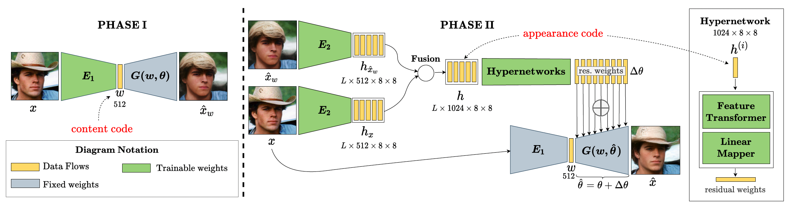
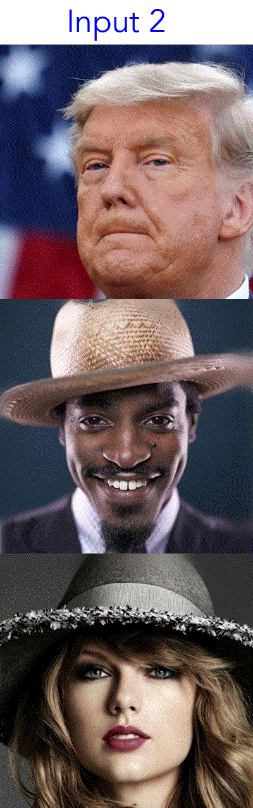
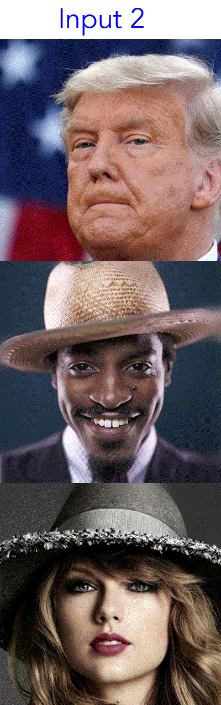

HyperInverter: Improving StyleGAN Inversion via Hypernetwork
Abstract
Real-world image manipulation has achieved fantastic progress in recent years as a result of the exploration and utilization of GAN latent spaces. GAN inversion is the first step in this pipeline, which aims to map the real image to the latent code faithfully. Unfortunately, the majority of existing GAN inversion methods fail to meet at least one of the three requirements listed below: high reconstruction quality, editability, and fast inference. We present a novel two-phase strategy in this research that fits all requirements at the same time. In the first phase, we train an encoder to map the input image to StyleGAN2 W space, which was proven to have excellent editability but lower reconstruction quality. In the second phase, we supplement the reconstruction ability in the initial phase by leveraging a series of hypernetworks to recover the missing information during inversion. These two steps complement each other to yield high reconstruction quality thanks to the hypernetwork branch and excellent editability due to the inversion done in the W space. Our method is entirely encoder-based, resulting in extremely fast inference. Extensive experiments on two challenging datasets demonstrate the superiority of our method.
Method
Our method contains two sequential phases: (1) We first train an encoder \(E_{1}\) to encode the input image \(x\) to a content code \(w\) in \(\mathcal{W}\)-space; \(w\) represents the main semantics of the image, therefore used in editing later. The output image of this phase is \(\hat{x}_{w}\). (2) We further regress the residual weights to update the generator to faithfully reconstruct the input details. First, we use another encoder \(E_{2}\) and a fusion operator to extract the appearance code \(h\) from the input image \(x\) and the initial image \(\hat{x}_{w}\), where \(L\) is the number of style layers of StyleGAN. Then, we employ a series of hypernetworks to embed the appearance code \(h\) to the generator \(G\) by predicting the residual weights \(\Delta\theta\). The final reconstructed image \(\hat{x}\) is generated by \(G\) with updated weights \(\hat{\theta} = \theta + \Delta\theta\) and \(w\) content code from Phase I.
Results
Inversion and Editing


Real-world Image Interpolation
 

Citation
@article{dinh2021hyperinverter,
title={HyperInverter: Improving StyleGAN Inversion via Hypernetwork},
author={Tan M. Dinh and Anh Tuan Tran and Rang Nguyen and Binh-Son Hua},
journal={arXiv preprint arXiv:2112.00719},
year={2021}
}